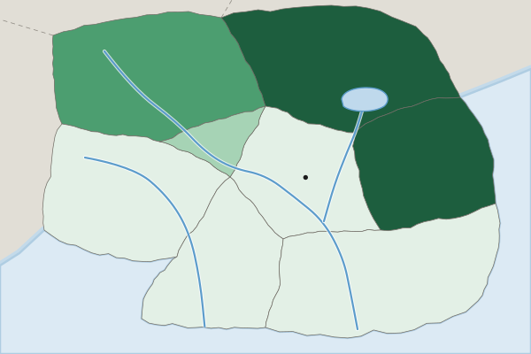

Defining Devolutionary Factors
Devolution moves power from a national government to its regions.
Part 1 · Hook
Why this matters
Part 2 · Before you start
What this builds on
Part 3 · Prerequisite check
Quick check before you start
1. What is a federal state?
- A state whose constitution divides power between national and regional governments
- A state run entirely from the capital
- A state with one nation
- A group of states
Show the answer
Germany and the United States are federal.
- Correct: A state whose constitution divides power between national and regional governments:
- A state run entirely from the capital:
- A state with one nation:
- A group of states:
2. What is a centrifugal force?
- Something that divides a group or state
- Something that unites a group or state
- The spread of a culture by migrants
- A boundary drawn by outsiders
Show the answer
Centrifugal forces pull apart; centripetal forces pull together.
- Correct: Something that divides a group or state:
- Something that unites a group or state:
- The spread of a culture by migrants:
- A boundary drawn by outsiders:
Part 4 · See it
See it first

Part 5 · Step by step
How it works, step by step
- A group feels its language, culture or interests are ignored by the national governmentit demands more self-rule or independence
- The group is concentrated in one region, far from the capital or cut off by waterits demands are easier to organize and harder to ignore
- The national government gives in, or the conflict turns violentpower moves to the region, or the state breaks apart
Part 6 · Key ideas
Key ideas
- Devolution is the transfer of power from the national government to regional governments; at its furthest, a region breaks away.
- Factors: physical division (Bangladesh, cut off from western Pakistan), ethnic separatism (Quebec, Scotland, Catalonia), ethnic cleansing (Bosnia in the 1990s), terrorism (ETA in Spain), economic and social problems, and irredentism (Germany and the Sudetenland, 1938).
- Separatism comes from inside a state; irredentism comes from a neighbor that claims land where its people live.
Part 7 · Misconception
A common mistake
The wrong idea: Devolution means a region becomes independent.
What actually happens: Devolution is any move of power from the center to regions. Most devolution stops short of independence: Scotland got its own parliament in 1999 and stayed in the United Kingdom.
Part 8 · Check yourself
Check yourself
Exam-style questions. Anything you miss goes into your review queue.
Map
Speakers of the Lenn language in Country A

People whose first language is Lenn (percent, invented)
- Under 10%
- 10% to 39%
- 40% to 69%
- 70% or more
1. Which statement describes the pattern on the map?
- Lenn speakers cluster in the northeast and east
- Lenn speakers are spread evenly across the country
- Lenn speakers are concentrated around the Capital Region
- Lenn speakers are concentrated along the South Coast
Show the answer
A described pattern names where: the share is 70% or more in the Lake District and Eastern Plains, and under 10% around the capital and in the south and west.
- Correct: Lenn speakers cluster in the northeast and east: Right: The Lake District and Eastern Plains are in the highest class, 70% or more.
- Lenn speakers are spread evenly across the country: Shares range from under 10% to 70% or more.
- Lenn speakers are concentrated around the Capital Region: The Capital Region is in the lowest class.
- Lenn speakers are concentrated along the South Coast: The South Coast is in the lowest class.
2. What is the scale of analysis of the data on this map?
- National, because the map shows a whole country
- Global, because languages spread around the world
- Regional, because Country A is in a world region
- Local (subnational): the data are given for provinces
Show the answer
The scale of analysis is the scale of the data shown. These data are for provinces, so the scale is subnational (local), even though the map shows a whole country.
- National, because the map shows a whole country: The scale of analysis is the scale of the data, not the size of the area shown.
- Global, because languages spread around the world: The map shows one country's provinces.
- Regional, because Country A is in a world region: The data are not for a group of countries.
- Correct: Local (subnational): the data are given for provinces: Right: Each value describes one province, a unit smaller than the country.
3. If Lenn speakers in the northeast and east feel ignored by the national government, which devolutionary pressure does the map best support?
- A movement to move the capital to the South Coast
- A push by a neighboring state to take the Capital Region
- A push for self-rule where Lenn speakers cluster
- A demand by the western provinces to leave Country A
Show the answer
Ethnic separatism is strongest where a minority group is concentrated in its own homeland, as Lenn speakers are in the northeast and east.
- A movement to move the capital to the South Coast: The South Coast has few Lenn speakers.
- A push by a neighboring state to take the Capital Region: The map shows no Lenn speakers around the capital.
- Correct: A push for self-rule where Lenn speakers cluster: Right: A minority concentrated in one area can more easily press for regional powers.
- A demand by the western provinces to leave Country A: Lenn shares are lowest in the west.
4. What is devolution?
- Moving power from regional governments to the national government
- Moving power from the national government to regional governments
- A region joining a neighboring state
- Redrawing voting districts after a census
Show the answer
Devolution is the transfer of power from a central government to regional governments. At its furthest, a region breaks away as a new state.
- Moving power from regional governments to the national government: That is centralization, the opposite.
- Correct: Moving power from the national government to regional governments: Right: Devolution shifts power downward, from the center to regions.
- A region joining a neighboring state: That would be a change of borders, not devolution.
- Redrawing voting districts after a census: That is redistricting.
5. Some people in Catalonia, a wealthy region of Spain, argue that it pays more in taxes to Spain's national government than it gets back. Which kind of devolutionary factor is this argument?
- Physical division
- Irredentism
- Ethnic cleansing
- An economic factor
Show the answer
Economic grievances, such as a richer region feeling it pays for poorer ones, can feed devolution. Catalans are divided: many want to stay in Spain.
- Physical division: Catalonia is joined by land to the rest of Spain.
- Irredentism: No neighboring state is claiming Catalonia.
- Ethnic cleansing: No group is being removed by force.
- Correct: An economic factor: Right: The argument is about money flowing from the region to the center.
6. How does ethnic separatism differ from irredentism?
- Separatism uses violence; irredentism is peaceful by nature
- Separatism happens at sea; irredentism happens on land
- Separatism starts inside a state; irredentism starts next door
- Separatism is a form of government; irredentism is a type of boundary line
Show the answer
Ethnic separatism is a group inside a state seeking independence or self-rule. Irredentism is a state seeking to annex land in another state where people of its nation live.
- Separatism uses violence; irredentism is peaceful by nature: Either can be peaceful or violent.
- Separatism happens at sea; irredentism happens on land: Both are about land and people.
- Correct: Separatism starts inside a state; irredentism starts next door: Right: Separatists want to leave; an irredentist state wants to take land in.
- Separatism is a form of government; irredentism is a type of boundary line: Neither is a form of government or a boundary type.
Part 9 · Summary
Summary
Part 10 · Up next
What comes next
Part 11 · Connections